1简介
GitHub是一个软件项目的托管平台，其只支持Git作为版本库。它还是一个开源协作社区，通过GitHub，既可以让别人参与你的开源项目，也可以参与别人的开源项目。
2创建项目
登录github后在页面右上角选择：
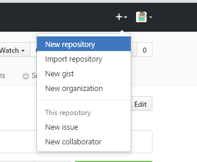
出现如下界面：
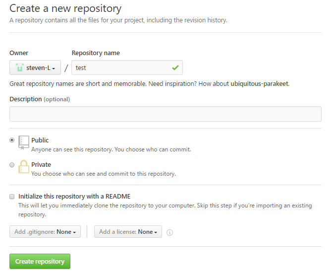
填写项目名称，点击绿色的创建仓库按钮，创建成功后如下图显示，不要关闭此页面。
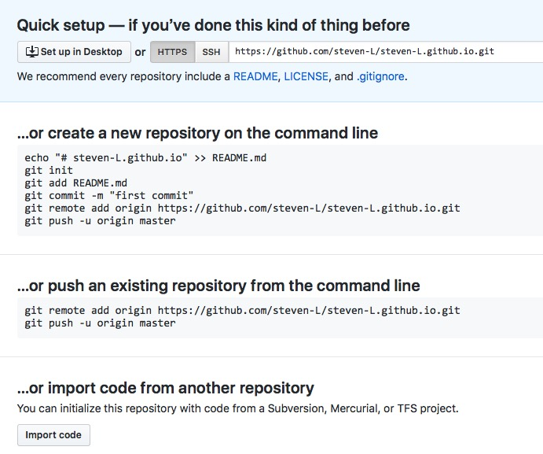
默认是使用https方式提交代码，也可以选择ssh方式
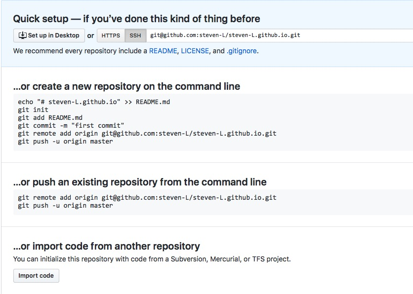
3代码提交
3.1 https提交
1.在本地新建一个文件夹(demo)作为项目的工作目录，右键文件夹选择Git Bash Here，弹出git命令行
2.在命令行内输入git clone <url>，进入文件夹(demo)会发现生成了和仓库同名的文件夹(test)
3.复制已经开发好的项目到test或者新建代码文件
4.使用命令行cd test命令进入test 文件夹：
5.文件添加到版本库：git add –all
6.提交到本地仓库：git commit -m ‘<说明文字>’
7.提交到远程服务器：git push，根据提示输入github账号邮箱和密码
3.2 ssh提交
同https主要区别在于：
使用https url克隆对初学者来说会比较方便，复制https url然后到git Bash里面直接用clone命令克隆到本地就好了，但是每次fetch和push代码都需要输入账号和密码，这也是https方式的麻烦之处。而使用SSH url克隆却需要在克隆之前先配置和添加好SSH key，因此，如果你想要使用SSH url克隆的话，你必须是这个项目的拥有者。否则你是无法添加SSH key的，另外ssh默认是每次fetch和push代码都不需要输入账号和密码，如果你想要每次都输入账号密码才能进行fetch和push也可以另外进行设置
1. 创建SSH Key。
在C盘user目录下，看看有没有.ssh目录，如果有，再看看这个目录下有没有id_rsa和id_rsa.pub这两个文件，如果已经有了，可直接跳到下一步。如果没有，打开Shell（Windows下打开Git Bash），创建SSH Key：
$ ssh-keygen -t rsa -C "你的邮箱"
-t指定密钥类型，默认是rsa，可以省略。
-C设置注释文字，比如邮箱。
-f指定密钥文件存储文件名。
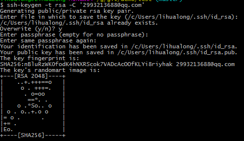
2. 复制ssh keys
登陆GitHub，打开 “settings”，“SSH and GPG Keys”页面，点击 按钮添加ssh key ；
填上任意Title，在Key文本框里粘贴id_rsa.pub文件的内容，最后确认。
3. 关联远程仓库
在本地创建一个仓库 git init
$ git remote add origin git@github.com:你自己的GitHub账户名/仓库名.git
下一步，就可以把本地库的所有内容推送到远程库上
3.3 切换提交方式
使用如下命令查看当前提交方式
git remote -v
在github里可以找到两种方式的地址
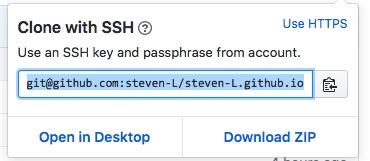
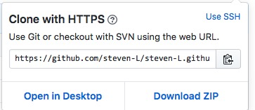
修改为https:
git remote set-url origin https://github.com/steven-L/steven-L.github.io.git
修改为ssh:
git remote set-url origin git@github.com:steven-L/steven-L.github.io.git
4 github pages
4.1 创建仓库
仓库名称为 [username].github.io username为你的账号显示名称
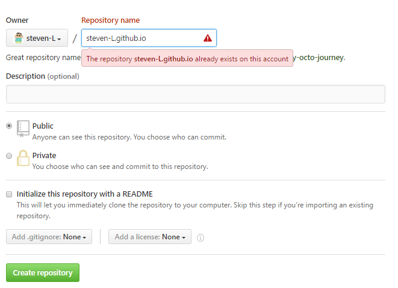
点击按钮，创建完成。
4.2 提交代码
在本地clone仓库，把网站代码提交
4.3 查看网站
5 多人协作
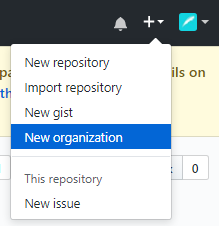
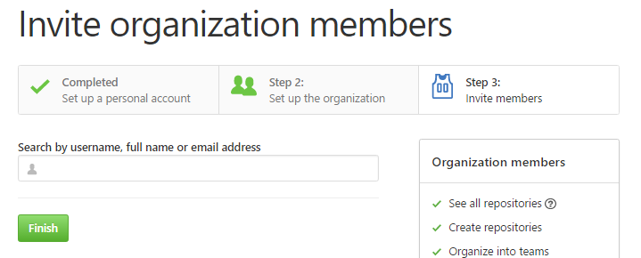
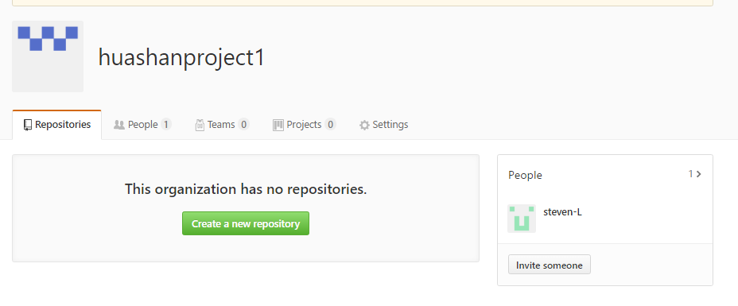把项目组织地址给队友，让队友加入组织
队友需要在自己的电脑里生成一个ssh key，将公钥（id_rsa.pub）里的内容拷出来给项目创建者r，让创建者r新建一个ssh key保存你的公钥。
这一步做完了以后，队友就可以把自己的代码push到你们团队的这个repository里了。
如果已经存在ssh key：
需要使用ssh-keygen 生成多个密钥文件，之后在同级目录下创建config文件，内容格式如下
Host github.com
HostName github.com
PreferredAuthentications publickey
User 1111111@qq.com
IdentityFile /C/Users/lihualong/.ssh/id_rsa
Host github.com
HostName github.com
PreferredAuthentications publickey
User 1111111@qq.com
IdentityFile /C/Users/lihualong/.ssh/id_rsa2
这里是同一个账号创建了2个密钥对应两个项目